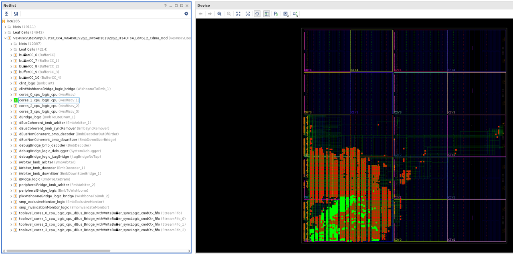

Reuse Timing-closed Logic As A Shell¶
Background¶
Often in FPGA development, a desirable timing-closed implementation is only achieved after several iterations or many parallel implementation runs of a design. Elusive timing closure can be caused by one or a few stubborn modules in a design that have tight constraints or a large number of moderately difficult paths that have a lower probability of timing closure on any given run.
One advantageous strategy to improve timing closure success can be to preserve and enable reuse of a known good implementation of the stubborn logic. By preserving the implementation, place and route tools can (hopefully) avoid rediscovering difficult timing closure and simply focus on the other logic.
Some traditional approaches in Vivado to employ this preservation strategy might be to use or Incremental Implementation Flows Dynamic Function eXchange (DFX, previously known as partial reconfiguration or PR). Incremental Implementation Flows can work if the design has mostly converged and the amount of future changes to the design is small. However, if significant development still remains, this strategy is unlikely to save compile time.
Using DFX, one can lock down a portion of the design to form a reusable shell along with one or more reconfigurable partitions that contains logic under development. However, using DFX for this reuse methodology comes with some additional restrictions such as requiring area constraints and partition pin placements between the static and dynamic partitions of the design. It is more difficult to achieve an overlap of the preserved logic and the new logic and the nature of DFX requires additional DRCs that would not normally be run without using DFX.
This tutorial offers an alternative to the DFX flow with fewer restrictions and the ability to reused timing-closed logic without the need of area constraints by using the capabilities inherent in RapidWright.
Approach¶
To enable reuse of a timing-closed design as a shell in RapidWright, the original design will need some minor modifications.
{kind=link}
The design should be logically partitioned into two parts: static and dynamic (as shown in the diagram above). The static part of the design is everything that should be preserved and be part of the “shell”. For example, many designs include components for handling network, DDR memory or a PCIe interface. These kinds of modules typically will have more demanding timing constraints and benefit from reusing their timing closure. The dynamic component is the portion of the design that the designer wants to change over time. The main requirement is that the dynamic component must be composed of one or more logical modules. If there is logic that needs to be modified at the top level of the design, it should be migrated into an existing module or a new module should be created and the logic added to it.
The interface of the dynamic modules must be consistent with all future logic modules that will populate it. In theory, this is straight-forward. However, during synthesis, design optimization, placement and routing, optimizations can modify the original interface of a module so that it no longer is consistent with the original definition and subsequent runs can cause divergence. To avoid this, dynamic modules should have the DONT_TOUCH synthesis attribute applied to the module instance. The alternative
KEEP_HIERARCHYis not sufficient asDONT_TOUCHwill stay persistent on the netlist through routing whereasKEEP_HIERARCHYwill only persist through synthesis.
Note that applying DONT_TOUCH to a module instance means that
Vivado cannot add or remove pins of the instance, but can connect or
disconnect pins and optimize logic inside the hierarchical module.
Once the design is properly partitioned and synthesis attributes
applied to dynamic modules, the design should be implemented using the
typical implementation flow in Vivado. Once a fully placed and routed
implementation that meets all requirements has been achieved, this
design can be preserved as a design checkpoint (DCP) and used to seed
the shell creation process.
This candidate shell design can then be loaded into RapidWright and all dynamic modules turned into black boxes.
Getting Started¶
1. Prerequisites¶
To run this tutorial, you will need:
RapidWright 2023.1.3 or later
Vivado 2023.1 or later
2. Creating a Candidate Implementation¶
For the ease of demonstration purposes in this tutorial, we have
chosen a simple RISCV design targeting a KCU105 board (Kintex
UltraScale xcku040-ffva1156-2-e). The design was created using
the Linux on LiteX-VexRiscv project, but
we will recreate the design using a minimal set of steps and
dependencies.
Note
This design compilation step can take up to 30 minutes to complete
and it is highly recommended to skip past it to save time. To do
so, you can download the output files instead by running:
wget http://www.rapidwright.io/docs/_downloads/kcu105_step2.zip
unzip kcu105_step2.zip
cd kcu105
vivado &
and then skip to step 3.
To get started, follow the commands below to download the
source files:
wget http://www.rapidwright.io/docs/_downloads/kcu105_example.zip
unzip kcu105_example.zip
cd kcu105
vivado -source kcu105.tcl &
The included script will create a Vivado project, load the generated
Verilog and synthesize, optimize and place and route the design. The
Verilog module for one of the RISCV CPUs has already been annotated
for you with DONT_TOUCH and will serve as our dynamic module for
this tutorial. The script will take several minutes to complete but
will generate a placed and routed DCP and EDIF file ready for
RapidWright. Notice we are running Vivado in the background as we
will come back to the terminal shortly.
A sample result is shown in the image below with the leaf cells of CPU
core (cores_1_cpu_logic_cpu) highlighted in yellow.
{kind=link}
Out of convenience for this tutorial, we will generate the logic that
will populate the dynamic module directly from this project. We
simply need to change the top of the design to the VexRiscv_1 core
and then resynthesize using the -mode out_of_context option:
set_property top VexRiscv_1 [current_fileset]
reset_run synth_1
synth_design -mode out_of_context
write_checkpoint riscv_1_synth.dcp
At this point we should have two DCPs, one placed and routed candidate DCP to be made into a shell and one synthesized RISCV core that will populate the dynamic region in our shell.
3. Creating a Shell¶
To create a shell implementation, we need to take our top-level RISCV design that has the static portion meeting all necessary constraints and remove all logic from the dynamic components.
To remove the logic in the dynamic module, we need to use RapidWright in order to carefully separate the static logic from the dynamic logic as no area constraints (i.e. pblocks) were used to separate the two. Vivado can create a black box but can only do so correctly when the module made into a black box was sufficiently constrained such that all of its logic does not share any sites with any static logic. RapidWright has a built-in command that can accept a DCP and one or more cell instance names and produce a shell-based design with the cell instances turned into black boxes. For our example, we can run RapidWright from the command line (outside of Vivado):
rapidwright MakeBlackBox kcu105_route.dcp kcu105_route_shell.dcp VexRiscvLitexSmpCluster_Cc4_Iw64Is8192Iy2_Dw64Ds8192Dy2_ITs4DTs4_Ldw512_Cdma_Ood/cores_1_cpu_logic_cpu
This will create a new “shell” DCP (kcu105_route_shell.dcp) where the
dynamic module has been turned into a black box. This DCP can then be
used again and again as a base starting point as it contains an
implemented solution for all of the static logic and we will use
Vivado (and RapidWright in the future) to place and route additional
dynamic modules on top of it.
4. Populating a Black Box¶
Returning to our running Vivado instance, we can close our previous
project and load the shell DCP using open_checkpoint at the Tcl
command prompt:
close_project
open_checkpoint kcu105_route_shell.dcp
Note
Due to the large number of constraints generated in RapidWright, opening the checkpoint might take a few minutes.
If RapidWright was able to correctly create the black box, you should see exactly one critical warning, which may show up in a dialog from Vivado as shown below:
{kind=link}
The implemented design will look similar to the original design, except that the cells previously highlighted in yellow above will be missing:
{kind=link}
You may also notice that several BEL sites have been marked with a
PROHIBIT property that prevents any cells from being placed in
those locations. Through experimentation, it has been found that
cells placed in the same half SLICE as those in the existing static
logic portion of the design can lead to congestion. Therefore,
RapidWright adds the PROHIBIT property to the remaining BEL sites
in any occupied half SLICEs to avoid this issue. These prohibited
locations can be seen in the image below (the red circles with a
slash):
{kind=link}
We can also verify that the design is consistent by checking the routing status:
report_route_status
Which should return a result something like this:
Design Route Status
: # nets :
------------------------------------------- : ----------- :
# of logical nets.......................... : 65546 :
# of nets not needing routing.......... : 23431 :
# of internally routed nets........ : 20613 :
# of nets with no loads............ : 2818 :
# of routable nets..................... : 42115 :
# of unrouted nets................. : 38 :
# of fully routed nets............. : 42077 :
# of nets with routing errors.......... : 0 :
------------------------------------------- : ----------- :
The key element to look for is that there are no nets with routing
errors. Since we see that value is 0 we can proceed.
At this point, we want to lock down the implementation so that further place and route runs do not upset the timing closure of the design. We can do this by running the Vivado Tcl command:
lock_design -level routing
This tags the netlist, placement and routing such that
place_design and route_design do not modify the netlist of the
existing implementation–thus preserving the original timing closure.
To populate the black box with the synthesized, out-of-context version
of the RISCV core, we can load it directly in Vivado with
read_checkpoint -cell (this is different from
open_checkpoint).
read_checkpoint -cell VexRiscvLitexSmpCluster_Cc4_Iw64Is8192Iy2_Dw64Ds8192Dy2_ITs4DTs4_Ldw512_Cdma_Ood/cores_1_cpu_logic_cpu riscv_1_synth.dcp
Once the dynamic module has been loaded with the synthesized RISCV core, we can implement the design and check the results
# We need to waive a DRC due to the nature of the design
set_msg_config -id {Common 17-55} -new_severity {Warning}
set_property SEVERITY {Warning} [get_drc_checks REQP-1753]
place_design
route_design
report_route_status
report_timing
Results should looks similar to:
Design Route Status
: # nets :
------------------------------------------- : ----------- :
# of logical nets.......................... : 75917 :
# of nets not needing routing.......... : 28293 :
# of internally routed nets........ : 24553 :
# of nets with no loads............ : 3740 :
# of routable nets..................... : 47624 :
# of nets with fixed routing....... : 41853 :
# of fully routed nets............. : 47624 :
# of nets with routing errors.......... : 0 :
------------------------------------------- : ----------- :
and should meet timing:
Timing Report
Slack (MET) : 0.253ns (required time - arrival time)
Source: main_crg_idelayctrl_ic_reset_reg/C
(rising edge-triggered cell FDRE clocked by main_crg_clkout1 {rise@0.000ns fall@2.500ns period=5.000ns})
Destination: IDELAYCTRL_REPLICATED_0_2/RST
(recovery check against rising-edge clock main_crg_clkout1 {rise@0.000ns fall@2.500ns period=5.000ns})
Path Group: **async_default**
Path Type: Recovery (Max at Slow Process Corner)
Requirement: 5.000ns (main_crg_clkout1 rise@5.000ns - main_crg_clkout1 rise@0.000ns)
Data Path Delay: 3.838ns (logic 0.117ns (3.048%) route 3.721ns (96.952%))
Logic Levels: 0
Clock Path Skew: -0.211ns (DCD - SCD + CPR)
Destination Clock Delay (DCD): 5.765ns = ( 10.765 - 5.000 )
Source Clock Delay (SCD): 6.087ns
Clock Pessimism Removal (CPR): 0.112ns
Clock Uncertainty: 0.065ns ((TSJ^2 + DJ^2)^1/2) / 2 + PE
Total System Jitter (TSJ): 0.071ns
Discrete Jitter (DJ): 0.108ns
Phase Error (PE): 0.000ns
Clock Net Delay (Source): 2.666ns (routing 1.174ns, distribution 1.492ns)
Clock Net Delay (Destination): 2.359ns (routing 1.078ns, distribution 1.281ns)
Location Delay type Incr(ns) Path(ns) Netlist Resource(s)
------------------------------------------------------------------- -------------------
(clock main_crg_clkout1 rise edge)
0.000 0.000 r
G10 0.000 0.000 r clk125_p (IN)
net (fo=0) 0.001 0.001 IBUFDS/I
HPIOBDIFFINBUF_X1Y59 DIFFINBUF (Prop_DIFFINBUF_HPIOBDIFFINBUF_DIFF_IN_P_O)
0.521 0.522 r IBUFDS/DIFFINBUF_INST/O
net (fo=1, routed) 0.090 0.612 IBUFDS/OUT
G10 IBUFCTRL (Prop_IBUFCTRL_HPIOB_I_O)
0.000 0.612 r IBUFDS/IBUFCTRL_INST/O
net (fo=1, routed) 0.750 1.362 IBUFDS_n_0_BUFG_inst_n_0
BUFGCE_X1Y52 BUFGCE (Prop_BUFCE_BUFGCE_I_O)
0.083 1.445 r IBUFDS_n_0_BUFG_inst/O
net (fo=9, routed) 1.687 3.132 main_crg_clkin
MMCME3_ADV_X1Y2 MMCME3_ADV (Prop_MMCME3_ADV_CLKIN1_CLKOUT1)
-0.231 2.901 r MMCME2_ADV/CLKOUT1
net (fo=1, routed) 0.437 3.338 main_crg_clkout1
BUFGCE_X1Y69 BUFGCE (Prop_BUFCE_BUFGCE_I_O)
0.083 3.421 r BUFG/O
X0Y1 (CLOCK_ROOT) net (fo=31, routed) 2.666 6.087 idelay_clk
SLICE_X0Y139 FDRE r main_crg_idelayctrl_ic_reset_reg/C
------------------------------------------------------------------- -------------------
SLICE_X0Y139 FDRE (Prop_HFF2_SLICEL_C_Q)
0.117 6.204 f main_crg_idelayctrl_ic_reset_reg/Q
net (fo=25, routed) 3.721 9.925 main_crg_idelayctrl_ic_reset
BITSLICE_CONTROL_X0Y3
IDELAYCTRL f IDELAYCTRL_REPLICATED_0_2/RST
------------------------------------------------------------------- -------------------
(clock main_crg_clkout1 rise edge)
5.000 5.000 r
G10 0.000 5.000 r clk125_p (IN)
net (fo=0) 0.001 5.001 IBUFDS/I
HPIOBDIFFINBUF_X1Y59 DIFFINBUF (Prop_DIFFINBUF_HPIOBDIFFINBUF_DIFF_IN_P_O)
0.324 5.325 r IBUFDS/DIFFINBUF_INST/O
net (fo=1, routed) 0.051 5.376 IBUFDS/OUT
G10 IBUFCTRL (Prop_IBUFCTRL_HPIOB_I_O)
0.000 5.376 r IBUFDS/IBUFCTRL_INST/O
net (fo=1, routed) 0.649 6.025 IBUFDS_n_0_BUFG_inst_n_0
BUFGCE_X1Y52 BUFGCE (Prop_BUFCE_BUFGCE_I_O)
0.075 6.100 r IBUFDS_n_0_BUFG_inst/O
net (fo=9, routed) 1.524 7.624 main_crg_clkin
MMCME3_ADV_X1Y2 MMCME3_ADV (Prop_MMCME3_ADV_CLKIN1_CLKOUT1)
0.335 7.959 r MMCME2_ADV/CLKOUT1
net (fo=1, routed) 0.372 8.331 main_crg_clkout1
BUFGCE_X1Y69 BUFGCE (Prop_BUFCE_BUFGCE_I_O)
0.075 8.406 r BUFG/O
X0Y1 (CLOCK_ROOT) net (fo=31, routed) 2.359 10.765 idelay_clk
BITSLICE_CONTROL_X0Y3
IDELAYCTRL r IDELAYCTRL_REPLICATED_0_2/REFCLK
clock pessimism 0.112 10.876
clock uncertainty -0.065 10.812
BITSLICE_CONTROL_X0Y3
IDELAYCTRL (Recov_CONTROL_BITSLICE_CONTROL_REFCLK_RST)
-0.633 10.179 IDELAYCTRL_REPLICATED_0_2
-------------------------------------------------------------------
required time 10.179
arrival time -9.925
-------------------------------------------------------------------
slack 0.253
The final implementation with the newly populated dynamic module highlighted in green is shown below.
{kind=link}
Complexity can vary widely amongst different designs, so not all designs may benefit from this approach. However, please reach out to the RapidWright team if you encounter challenges when applying this approach for your own projects.